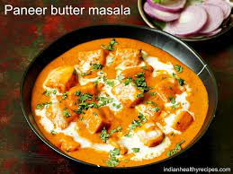

PANEER BUTTER MASALA

Description:
Paneer Butter Masala is a North Indian dish featuring paneer cubes in a creamy tomato-based curry with aromatic spices. It's known for its rich flavor and is often served with naan or rice.
Ingredients:
- ½ cup vegetable oil
- ½ pound paneer, cut into 1/2-inch cubes
- 2 onions, finely chopped
- 1 tablespoon ground cashews
- ½ teaspoon garam masala
- 1 (8 ounce) can tomato sauce
- ½ cup milk
Steps:
-
Heat oil in a large skillet over medium heat; fry paneer in batches until golden, about 5 minutes. Transfer fried paneer to a paper towel-lined plate to drain, retaining vegetable oil in skillet.
-
Melt butter in the same skillet over medium heat; cook and stir onion until golden brown, about 10 minutes. Add ginger paste and garlic paste. Continue to cook until fragrant, about 1 minute more. Stir cashews, ground red chiles, cumin, coriander, and garam masala into the onion mixture. Cook and stir for 1 minute.
-
Stir tomato sauce, half-and-half, milk, sugar, and salt into spice mixture; simmer until thickened, about 5 minutes. Reduce heat to low. Add fried paneer and simmer until heated through, about 5 minutes more.